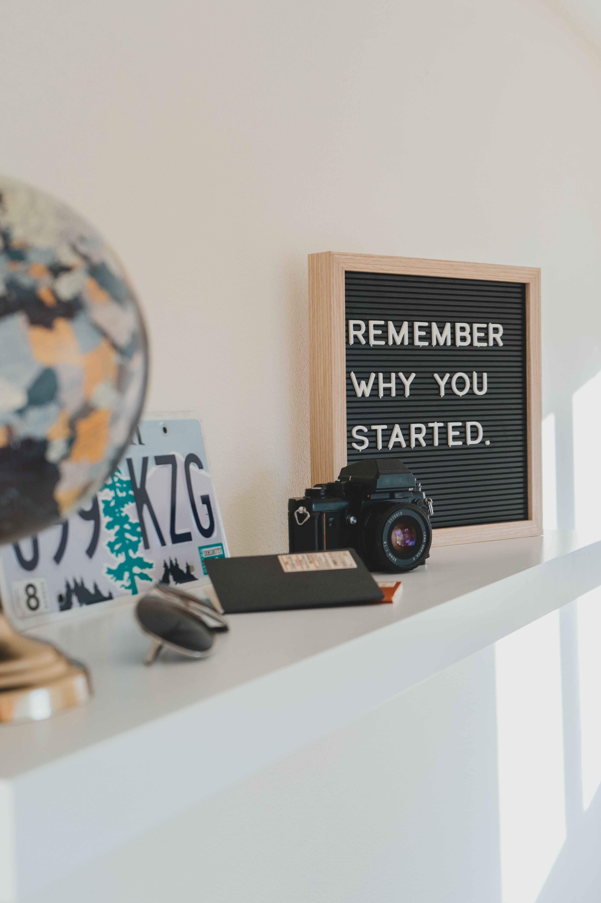

20 de Março de
Construindo um futuro digital
A paixão pela tecnologia e o fascínio por tudo o que a computação pode
proporcionar na sociedade sempre estiveram presentes em minha vida.
Mas agora, estudando Ciência da Computação, tive a oportunidade de
mergulhar ainda mais fundo nesse universo empolgante.Os primeiros
passos foram desafiadores, pois me deparei com conceitos e termos
técnicos que eram novos para mim. No entanto, a sede de conhecimento e
a determinação em aprender mais me impulsionaram a seguir em frente.
Cada aula, cada projeto, cada desafio tornaram-se oportunidades
valiosas de crescimento pessoal e profissional.
20 de Março de
Etapa em construção

Cada dia é uma oportunidade para aprender algo novo, expandir
horizontes e desafiar limites. Ainda há muito a percorrer nessa
jornada, mas a certeza de que estou seguindo minha paixão e
construindo uma base sólida para minha carreira torna tudo ainda mais
empolgante. Portanto, olho para o futuro com entusiasmo e
determinação, sabendo que cada desafio superado é um passo adiante
rumo a uma carreira gratificante e repleta de possibilidades. E, acima
de tudo, estou amando cada segundo dessa trajetória desafiadora e
incrível.